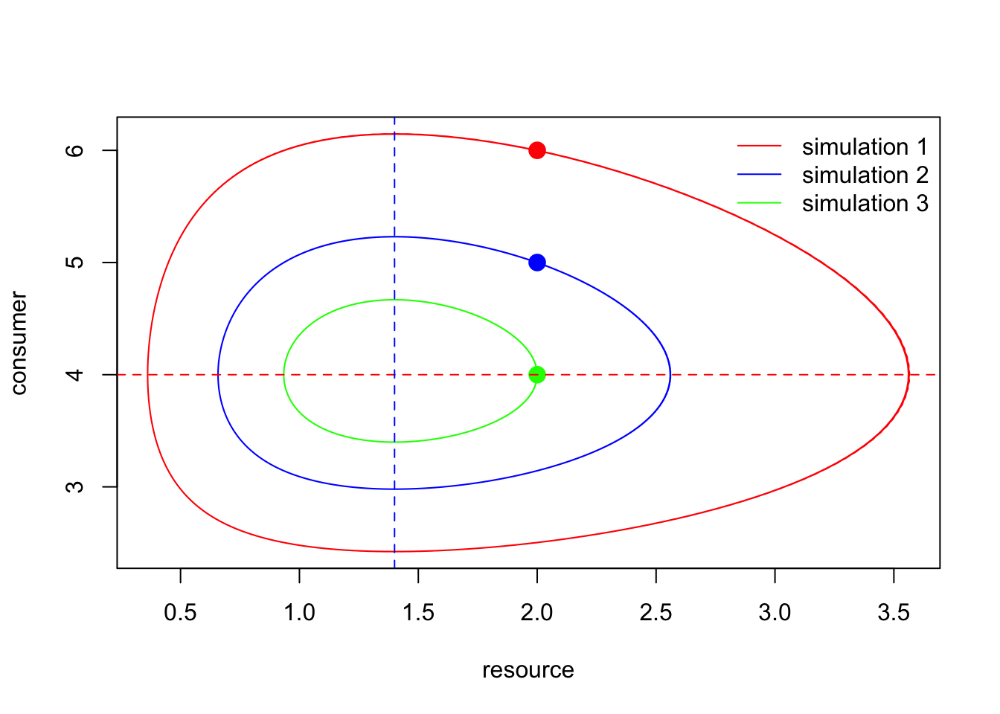
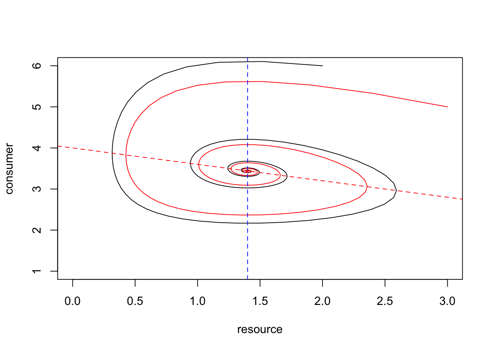

In this exercise, you will investigate the behavior of the continuous time Lotka-Volterra predator-prey model and two variants of it, using code programmed in R. This is the first time that you analyze a model in contiuous time in R. Computationally, this is more complicated than analyzing a model in discrete time, because it cannot be done by simply iterating a recursion equation. Instead, we have to use a method called numerical integration. Luckily, an R-package exists that allows us to do just that.
Thus, before you can start you have to install and load the package deSolve into R. In order to install this package click on Packages at the menu bar of the bottom right window of your workspace in R-Studio. Then press Install and search for the package deSolve and follow the instructions. In order load the package execute the following code:
library(deSolve)In the lecture, you got to know the Lotka-Volterra predator-prey model, which can be written as
\[ \begin{align} \frac{\mathrm{d}R}{\mathrm{d}t} & =rR-aRC\\ \frac{\mathrm{d}C}{\mathrm{d}t} & =eaRC-dC \end{align} \]
where R and C denote the density of resources and consumers, respectively. Furthermore, r denotes the intrinsic growth rate of the resource, a the feeding efficiency of the consumer on the resource, e the conversion efficiency of resource individuals into consumer individuals and d the consumer death rate. In the next step, we define a function in R that describes this system of coupled ordinary differential equations and that will later allow us to simulate the dynamics that ensue from these equations.
predpreyLV <- function(t, y, params) {
R <- y[1]
C <- y[2]
with(as.list(params), {
dR.dt <- r * R - a * R * C
dC.dt <- e * a * R * C - d * C
return(list(c(dR.dt, dC.dt)))
})
}In order to be able to analyze the dynamics described by these equations, we have to choose values for the parameters. You can change these values at any time.
r <- 2
a <- 0.5
e <- 0.5
d <- 0.35Before we can start to simulate the dynamics we have to additionally specify the initial population densities of the prey and predator population. Also these values can be changed at any time.
R0 <- 2
C0 <- 6Now we are ready simulate the dynamics for the above set of parameters. The following code produces a plot with time on the x-axis and the resource and consumer density on the y-axis. The solid line shows the density of resources and the hatched line the density of consumers.
params1 <- c(r = r, a = a, e = e, d = d)
MaxTime <- 60 # length of the time series, can be changed at any time
Time <- seq(0, MaxTime, by = 0.1) # here we produce a sequence of time points at which we will determine the population densities
LV.out <- ode(c(R0, C0), Time, predpreyLV, params1) # here we call the function "ode" that does the hard work of numerical integration and which is part of the package "deSolve"
matplot(Time, (LV.out[, 2:3]), type = "l", lty = 1:2, col=1, ylab = "Population Density", xlab="Time")
legend("top", c(expression("resource"), expression("consumer")), lty = 1:2, bty = "n")Let us run (and plot) the same model as above twice more, but with somewhat different starting densities — everything else is the same.
R02 <- 2
C02 <- 5
LV.out2 <- ode(c(R02, C02), Time, predpreyLV, params1)
matplot(Time, (LV.out2[, 2:3]), type = "l", lty = 1:2, col=1, ylab = "Population Density", xlab="Time")
legend("top", c(expression("resource"), expression("consumer")), lty = 1:2, bty = "n")R03 <- 2
C03 <- 4
LV.out3 <- ode(c(R03, C03), Time, predpreyLV, params1)
matplot(Time, (LV.out3[, 2:3]), type = "l", lty = 1:2, col=1, ylab = "Population Density", xlab="Time")
legend("top", c(expression("resource"), expression("consumer")), lty = 1:2, bty = "n")Instead of looking at these simulations as time series, we can also look at them in a phase-plane diagram.
plot(LV.out[, 2], LV.out[, 3], type = "l", lty = 1, col = "red", ylab = "consumer", xlab = "resource")
points(R0, C0, cex = 1.5, pch = 19, col = "red") # adds a dot to show the starting density
lines(LV.out2[, 2], LV.out2[, 3], lty = 1, col = "blue") # adds the second simulation to the plot
points(R02, C02, cex = 1.5 ,pch = 19, col = "blue") # adds a dot to show the starting density
lines(LV.out3[, 2], LV.out3[, 3], lty = 1, col = "green") # adds the third simulation to the plot
points(R03, C03, cex = 1.5, pch = 19, col = "green") # adds a dot to show the starting density
legend("topright", c(expression("simulation 1"), expression("simulation 2"), expression("simulation 3")), lty = 1, col = c("red","blue","green"), bty = "n")
abline(h = r/a, lty = 2, col = "red") # isocline for the resource, which is a horizontal line
abline(v = d/(e * a), lty = 2, col = "blue") # isocline for the consumer, which is a vertical line
Trajectories are “closed orbits”, that is, the dynamics starting at initial densities (R0, C0) go back to exactly the same densities, and so forth. The population population cycles repeat themselves in an identical manner.
The starting conditions affect the amplitude of the population cycles.
Counter-clockwise.
This model shows sustained population cycles. The different cycles resulting from different initial conditions are “neutral” in the sense that they are neither attracting or repelling. Biologically, this seems unrealistic. Environmental and demograhphic stochasticity would moved the population dynamics across the cycles of different amplitude and the populatin is likely to go extinct in the long run when the population dynamics moves due to chance close to one of the axex where the population dynamics of one species is very low.
In the Lotka-Volterra consumer-resource model shown above the resource grows exponentially in the absence of a consumer (make yourself clear that this is true based on the equation) and the consumer feeds on the resource according to a linear functional response. In particular, the first assumption is unrealistic. Thus, let us modify the model by assuming the the resource grows logistically in the absence of a consumer:
\[ \begin{align} \frac{\mathrm{d}R}{\mathrm{d}t}&=Rr\bigg(1-\frac{R}{K}\bigg)-aRC\\ \frac{\mathrm{d}C}{\mathrm{d}t}&=eaRC-dC \end{align} \]
Let’s define the corresponding function:
predprey.log.prey <- function(t, y, p) {
R <- y[1]
C <- y[2]
with(as.list(p), {
dR.dt <- r * R * (1 - R / k) - a * R * C
dC.dt <- e * a * R * C - d * C
return(list(c(dR.dt, dC.dt)))
})
}To be able to compare the dynamics of this new model we choose the same parameters as above to which we have to add a value for the one new parameter, the resource carrying capacity k.
r <- 2
e <- 0.5
a <- 0.5
d <- 0.35
k <- 10Let us run (and plot) the model. We do this for two different initial population vectors (results shown in black and red for the first and second initial densities, respectively).
params.log.prey1 <- c(a = a, r = r, d = d, e = e, k = k)
MaxTime <- 50
R0 <- 2 # initial density for resource species
C0 <- 6 # initial density for consumer species
Time <- seq(0, MaxTime, by = 0.2)
log.prey.out <- ode(c(R0, C0), Time, predprey.log.prey, params.log.prey1)
R0 <- 3 # alternative initial density for resource species
C0 <- 5 # alternative initial density for consumer species
Time <- seq(0, MaxTime, by = 0.2)
log.prey.out.2 <- ode(c(R0, C0), Time, predprey.log.prey, params.log.prey1)
matplot(Time, (log.prey.out[, 2:3]), type = "l", lty = 1:2, col=1, ylab = "Population Size", xlab="Time")
lines(Time, (log.prey.out.2[, 2]), type = "l", lty = 1, col="red", ylab = "Population Size", xlab="Time")
lines(Time, (log.prey.out.2[, 3]), type = "l", lty = 2, col="red", ylab = "Population Size", xlab="Time")
legend("top", c(expression("resource"), expression("consumer")), lty = 1:2, bty = "n")plot(log.prey.out[, 2], log.prey.out[, 3], type = "l", lty = 1, col = 1, ylab = "consumer", xlab = "resource", xlim = c(0,3), ylim = c(1,6))
lines(log.prey.out.2[, 2], log.prey.out.2[, 3], type = "l", lty = 1, col = "red", ylab = "consumer", xlab = "resource")
abline(a = r/a, b = -r/(a*k), lty = 2, col = "red") # resource isocline, a straight line with negative slope
abline(v = d / (e * a), lty = 2, col = "blue") # consumer isocline, a vertical line
What do you observe?
Vary the starting densities. How does this affect the long dynamics of the model?
How does your conclusion about the dynamics of this model differ from the first model without logistic resource growth?
The equilibrium at which consumers and resources coexists becomes a stable equilibrium. It is an attractor of the cyclic dynamics regardless of the initial population vector. The predator and prey dynamics oscillate but the amplitude of these oscillations decreases. Thus, this model does not seems to be able to explain the long-term population dynamical cycles that some consumer-resource systems show in nature.
Finally, let us make one more modification to the model. Instead of a linear functional response it is more realistic that consumers have a type-II functional response. This means that the amount of resources a consumer individual can take up saturates with increasing resource density due to consumers spending an increasing amount of time handling prey items. This version of the predator-prey model is also knows as the Rosenzweig-MacArthur model. The modified equations are:
\[ \begin{align} \frac{\mathrm{d}R}{\mathrm{d}t}&=Rr\bigg(1-\frac{R}{K}\bigg)-\frac{aCR}{1+ahR}\\ \frac{\mathrm{d}C}{\mathrm{d}t}&=\frac{eaRC}{1+ahR}-dC \end{align} \] The corresponding function in R is as follows.
predprey.RosMac <- function(t, y, p) {
R <- y[1]
C <- y[2]
with(as.list(p), {
dR.dt <- r * R * (1 - R / k) - a * C * R/(1 + a * h * R)
dC.dt <- e * a * R * C/(1 + a * h * R) - d * C
return(list(c(dR.dt, dC.dt)))
})
}Again, we keep the parameter values as above with one additional parameter, the handling time h.
r <- 2
e <- 0.5
a <- 0.5
d <- 0.35
k <- 10
h <- 0.35Let us run the model and plot the resulting time series.
params.RosMac <- c(a = a, r = r, d = d, e = e, k = k, h = h)
MaxTime <- 150 # you can increase MaxTime if you think the dynamics have not yet reached their "endpoint"
Time <- seq(0, MaxTime, by = 0.2)
R0 <- 2 # initial resource density
C0 <- 2 # initial consumer density
RosMac.out <- ode(c(R0, C0), Time, predprey.RosMac, params.RosMac)
R0 <- 2 # initial resource density
C0 <- 3.5 # initial consumer density
RosMac.out.2 <- ode(c(R0, C0), Time, predprey.RosMac, params.RosMac)
matplot(Time, (RosMac.out[, 2:3]), type = "l", lty = 1:2, col=1, ylab = "Population Size", xlab="Time") # time series plot for first initial population vector
lines(Time, (RosMac.out.2[, 2]), type = "l", lty = 1, col="red") # time series plot for alternative initial population vector
lines(Time, (RosMac.out.2[, 3]), type = "l", lty = 2, col="red")
legend("top", c(expression("resource"), expression("consumer")), lty = 1:2, bty = "n")plot(RosMac.out[, 2], RosMac.out[, 3], type = "l", lty = 1, col = 1, ylab = "consumer", xlab = "resource")
lines(RosMac.out.2[, 2], RosMac.out.2[, 3], type = "l", lty = 1, col = "red", ylab = "consumer", xlab = "resource")
abline(v = d / (e * (a - d*h)), lty = 2, col = "blue") # consumer isocline, a vertical line
# to produce the graph for the resource isocline requires a bit more work since the now becomes a "curve" instead of a straight line
R <- 0:k
Riso <- expression(r / (a * k) * (k -R) * (1 + a * h * R))
RisoStable <- eval(Riso)
lines(R, RisoStable, type = "l", lty =2, ylab = "consumer", xlab = "resource", col = "red", ylim = c(0, 10)) # resource isoclineIn the following, please investigate this model in a bit more detail by varying parameters and observing how the model responds. More specifically,
With the above parameter values the joint consumer and resource population dynamics approach a limit cycle. From then onwards, the dynamics follow the pattern of a typical consumer-resource cycle with the consumer dynamics lagging one quarter of a cycle length behind the dynamics of the resource. The same limit cycle is approached independent of the initial conditions. If the initial condition lies outside the limit cycle, the dynamics first spiral inwards to apprach the limit cycle (black curves above), and if the initial condition lies inside the limit cycle, the dynamics first spiral outwards to apprach the limit cycle (red curves above). In summary, this model can potentially explain the sustained oscillations that we obverve in the time series of consumer-resource systems.
d <- 0.5 # higher consumer death rate that moves the consumer isocline further to the right
params.RosMac <- c(a = a, r = r, d = d, e = e, k = k, h = h)
MaxTime <- 150 # you can increase MaxTime if you think the dynamics have not yet reached their "endpoint"
Time <- seq(0, MaxTime, by = 0.2)
R0 <- 2 # initial resource density
C0 <- 2 # initial consumer density
RosMac.out <- ode(c(R0, C0), Time, predprey.RosMac, params.RosMac)
R0 <- 2 # initial resource density
C0 <- 3.5 # initial consumer density
RosMac.out.2 <- ode(c(R0, C0), Time, predprey.RosMac, params.RosMac)
matplot(Time, (RosMac.out[, 2:3]), type = "l", lty = 1:2, col=1, ylab = "Population Size", xlab="Time") # time series plot for first initial population vector
lines(Time, (RosMac.out.2[, 2]), type = "l", lty = 1, col="red") # time series plot for alternative initial population vector
lines(Time, (RosMac.out.2[, 3]), type = "l", lty = 2, col="red")
legend("top", c(expression("resource"), expression("consumer")), lty = 1:2, bty = "n")plot(RosMac.out[, 2], RosMac.out[, 3], type = "l", lty = 1, col = 1, ylab = "consumer", xlab = "resource")
lines(RosMac.out.2[, 2], RosMac.out.2[, 3], type = "l", lty = 1, col = "red", ylab = "consumer", xlab = "resource")
abline(v = d / (e * (a - d*h)), lty = 2, col = "blue") # consumer isocline, a vertical line
# to produce the graph for the resource isocline requires a bit more work since the now becomes a "curve" instead of a straight line
R <- 0:k
Riso <- expression(r / (a * k) * (k -R) * (1 + a * h * R))
RisoStable <- eval(Riso)
lines(R, RisoStable, type = "l", lty =2, ylab = "consumer", xlab = "resource", col = "red", ylim = c(0, 10)) # resource isoclineIncreasing the value of the consumer mortality rate d such that the consumer isocline intersects to the right of the maximum of the resource isocline with the resource isocline has a strong effect on the dynamics. The joint population dynamics now reach the equilibrium point where the two isocline intersec. From then onwards the system shows no oscillations any longer. These dynamics are similar to those of the above model with a logistically growing resource and a consumer feeding with a type-I functional response. This outcome is independent of the initial conditions (as shown by the red and black lines above).
d <- 0.9 # higher consumer death rate that moves the consumer isocline even further to the right
params.RosMac <- c(a = a, r = r, d = d, e = e, k = k, h = h)
MaxTime <- 150 # you can increase MaxTime if you think the dynamics have not yet reached their "endpoint"
Time <- seq(0, MaxTime, by = 0.2)
R0 <- 2 # initial resource density
C0 <- 2 # initial consumer density
RosMac.out <- ode(c(R0, C0), Time, predprey.RosMac, params.RosMac)
matplot(Time, (RosMac.out[, 2:3]), type = "l", lty = 1:2, col=1, ylab = "Population Size", xlab="Time") # time series plot for first initial population vector
legend("top", c(expression("resource"), expression("consumer")), lty = 1:2, bty = "n")plot(RosMac.out[, 2], RosMac.out[, 3], type = "l", lty = 1, col = 1, ylab = "consumer", xlab = "resource")
abline(v = d / (e * (a - d*h)), lty = 2, col = "blue") # consumer isocline, a vertical line
# to produce the graph for the resource isocline requires a bit more work since the now becomes a "curve" instead of a straight line
R <- 0:k
Riso <- expression(r / (a * k) * (k -R) * (1 + a * h * R))
RisoStable <- eval(Riso)
lines(R, RisoStable, type = "l", lty =2, ylab = "consumer", xlab = "resource", col = "red", ylim = c(0, 10)) # resource isoclineIf the consumer mortality rate d is increased even further such that the consumer isocline is moved further to the right until it does not intersect with the resource isocline anymore, then the dynamics become very simple. The consumer population goes extinct and the resource population reached its carrying capacity.
library(gridExtra)d <- 0.35 # original value of the consumer death rate
R0 <- 2 # initial resource density
C0 <- 2 # initial consumer density
k <- 8 # resource carrying capacity
params.RosMac <- c(a = a, r = r, d = d, e = e, k = k, h = h)
RosMac.out.2 <- ode(c(R0, C0), Time, predprey.RosMac, params.RosMac)
plot(RosMac.out.2[, 2], RosMac.out.2[, 3], type = "l", lty = 1, col = 1, ylab = "consumer", xlab = "resource")
legend("topright", c(expression("K=8")))
abline(v = d / (e * (a - d*h)), lty = 2, col = "blue")
R <- 0:k
Riso <- expression(r / (a * k) * (k -R) * (1 + a * h * R))
RisoStable <- eval(Riso)
lines(R, RisoStable, type = "l", lty =2, ylab = "consumer", xlab = "resource", col = "red", ylim = c(0, 10)) # resource isoclinek <- 10 # increased resource carrying capacity
params.RosMac <- c(a = a, r = r, d = d, e = e, k = k, h = h)
RosMac.out.2 <- ode(c(R0, C0), Time, predprey.RosMac, params.RosMac)
plot(RosMac.out.2[, 2], RosMac.out.2[, 3], type = "l", lty = 1, col = 1, ylab = "consumer", xlab = "resource")
legend("topright", c(expression("K=10")))
abline(v = d / (e * (a - d*h)), lty = 2, col = "blue")
R <- 0:k
Riso <- expression(r / (a * k) * (k -R) * (1 + a * h * R))
RisoStable <- eval(Riso)
lines(R, RisoStable, type = "l", lty =2, ylab = "consumer", xlab = "resource", col = "red", ylim = c(0, 10)) # resource isoclinek <- 12 # increased resource carrying capacity
params.RosMac <- c(a = a, r = r, d = d, e = e, k = k, h = h)
RosMac.out.2 <- ode(c(R0, C0), Time, predprey.RosMac, params.RosMac)
plot(RosMac.out.2[, 2], RosMac.out.2[, 3], type = "l", lty = 1, col = 1, ylab = "consumer", xlab = "resource")
legend("topright", c(expression("K=12")))
abline(v = d / (e * (a - d*h)), lty = 2, col = "blue")
R <- 0:k
Riso <- expression(r / (a * k) * (k -R) * (1 + a * h * R))
RisoStable <- eval(Riso)
lines(R, RisoStable, type = "l", lty =2, ylab = "consumer", xlab = "resource", col = "red", ylim = c(0, 10)) # resource isoclinek <- 14 # increased resource carrying capacity
params.RosMac <- c(a = a, r = r, d = d, e = e, k = k, h = h)
RosMac.out.2 <- ode(c(R0, C0), Time, predprey.RosMac, params.RosMac)
plot(RosMac.out.2[, 2], RosMac.out.2[, 3], type = "l", lty = 1, col = 1, ylab = "consumer", xlab = "resource")
legend("topright", c(expression("K=14")))
abline(v = d / (e * (a - d*h)), lty = 2, col = "blue")
R <- 0:k
Riso <- expression(r / (a * k) * (k -R) * (1 + a * h * R))
RisoStable <- eval(Riso)
lines(R, RisoStable, type = "l", lty =2, ylab = "consumer", xlab = "resource", col = "red", ylim = c(0, 10)) # resource isoclineAbove we show the population dynamics on the face plane as resulting from five different values for the consumer carrying capacity K, namely K=8, 10, 12 and 14. For K=8 the dynamics reach a stable equilibrium point. For the remaining three values of K the dynamics reach a stable limit cycle. The amplitude of this limit cycle increases with increasing K-values, causing that the limit cycle gets closer the the coordinate axes of the phase plane where the density of either the resource or the consumer is very low. At these population densities the rare species is prone to extinction to either demograhic or environmental stochasticity. Thus, increasing the producutivity of the resource (as captured by K) destabilizes the consumer-resource system. The phenomenon is known as the paradox of enrichment.